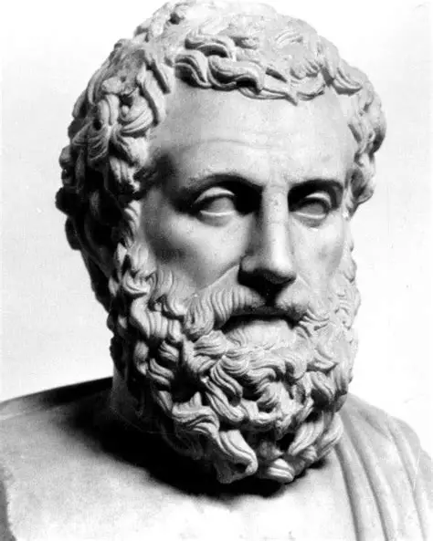
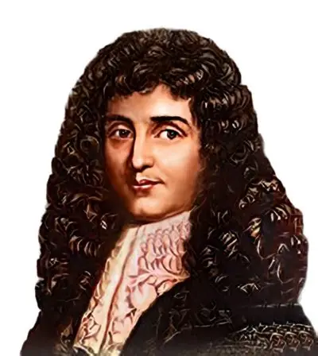
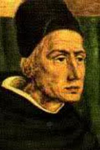
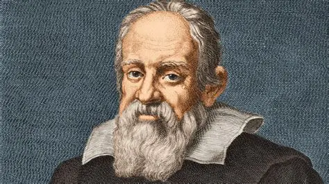
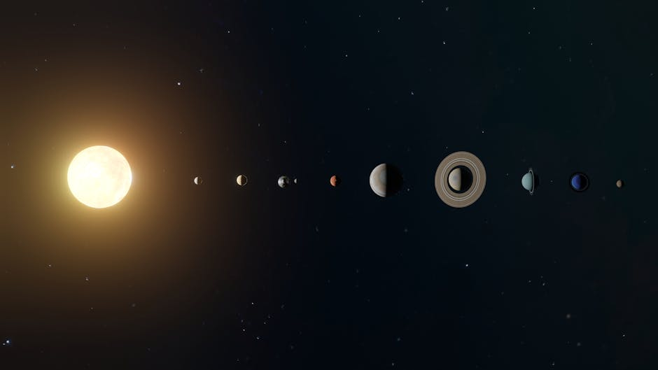
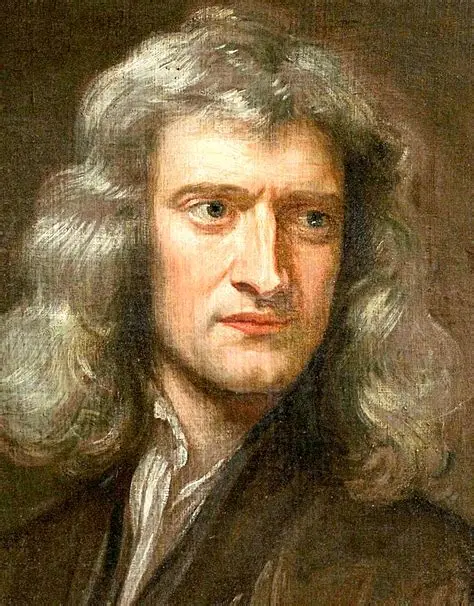

Como a humanidade aprendeu a descrever o movimento
Existe uma única explicação para todos esses movimentos?




Aristóteles: corpos mais pesados tenderiam a cair mais rápido.


A mesma física vale na Terra e no céu.
A história da cinemática é a história de uma transformação profunda: